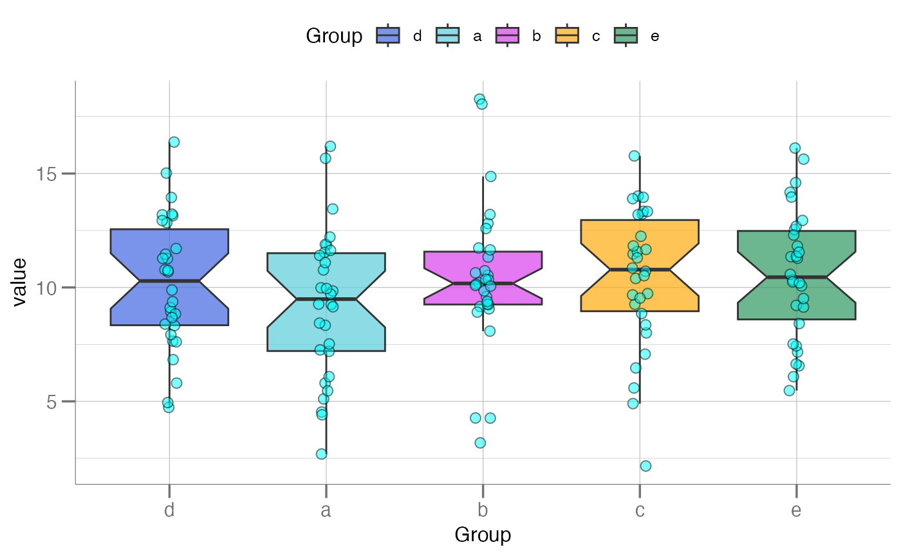
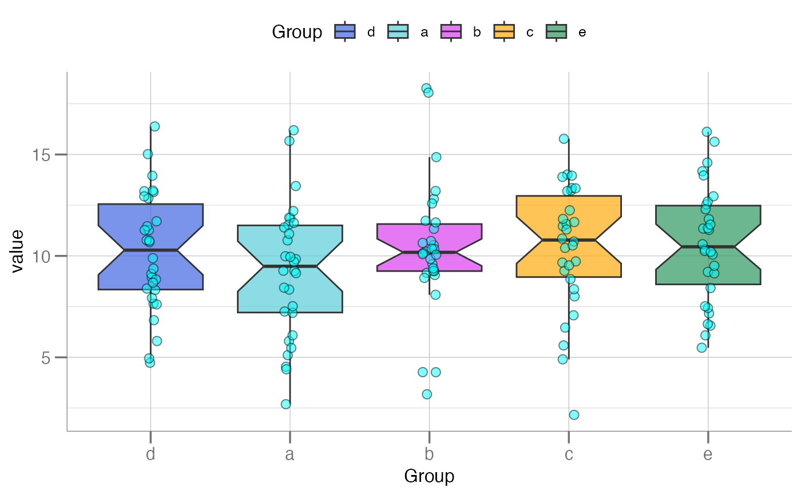

Plot a series of boxplots with "beeswarm"-style points added to the boxes.
Usage
boxplotBeeswarm(
.data,
notch = FALSE,
label = "Group",
main = NULL,
y.lab = "value",
x.lab = label,
cols,
pt.size = 2.5,
pt.color = "black",
pt.shape = 21,
...
)Arguments
- .data
Either a
data.frame/tbl_dfobject where each column is a numeric vector containing values for each box, or a namedlistobject which can be converted to one.- notch
Logical. Should notches be drawn in the boxplots? If FALSE (default), a standard box plot will be drawn. If TRUE, notches will be added to the median line of each box plot. See
notchargument ofgeom_boxplot().- label
Character. A label for the grouping variable, i.e. what the columns of the data frame represent.
- main
Character. Main title for the plot. See
ggtitle()forggplot2style graphics.- y.lab
Character. Optional string for the y-axis. Otherwise one is automatically generated (default).
- x.lab
Character. Optional string for the x-axis. Otherwise one is automatically generated (default).
- cols
Character. A vector of colors for the groups/boxes. For
plotDoubleHist(), must belength = 2.- pt.size
Numeric. A size for the points. See
geom_point().- pt.color
Character. A fill color for the points. See
geom_point().- pt.shape
Numeric or Character. Recognized
pchshapes for the points. Recall that onlypch = 21 - 25are "fill-able". Other point characters will not take on the color frompt.color. Seegeom_point().- ...
Additional arguments passed to
geom_boxplot().
See also
geom_boxplot(), geom_jitter()
Other boxplots:
boxplotGrouped(),
boxplotSubarray()
Examples
df <- lapply(setNames(LETTERS[1:5], letters[1:5]), \(x) rnorm(30, 10, 3)) |>
data.frame() |>
dplyr::select(d, dplyr::everything()) # move `d` to the front
head(df)
#> d a b c e
#> 1 11.272563 5.799869 12.806090 13.223038 16.11811
#> 2 13.189306 10.765951 10.529466 8.004735 11.34836
#> 3 13.146138 2.688209 10.731056 13.341857 14.17544
#> 4 9.885691 9.983286 14.870647 9.262311 11.27970
#> 5 11.458447 11.864658 10.336114 6.467310 10.32275
#> 6 15.018648 13.445235 9.598009 7.072448 10.06688
df |> boxplotBeeswarm(main = "Title")
 df |> boxplotBeeswarm(pt.color = "cyan", notch = TRUE) # add notch

df |> boxplotBeeswarm(cols = "grey") # all boxes 1 color
df |> boxplotBeeswarm(pt.color = "cyan", notch = TRUE) # add notch

df |> boxplotBeeswarm(cols = "grey") # all boxes 1 color
 df |> boxplotBeeswarm(label = "Disease Level", y.lab = "Y")
# Some point shapes can't be filled with color.
# Example of a non-fillable `pt.shape` value
df |> boxplotBeeswarm(pt.shape = 13)
df |> boxplotBeeswarm(label = "Disease Level", y.lab = "Y")
# Some point shapes can't be filled with color.
# Example of a non-fillable `pt.shape` value
df |> boxplotBeeswarm(pt.shape = 13)
 # Shapes 21 - 25 are fillable
df |> boxplotBeeswarm(cols = rep("blue", ncol(df)), pt.size = 5,
pt.shape = 23, pt.color = "red")
# Shapes 21 - 25 are fillable
df |> boxplotBeeswarm(cols = rep("blue", ncol(df)), pt.size = 5,
pt.shape = 23, pt.color = "red")